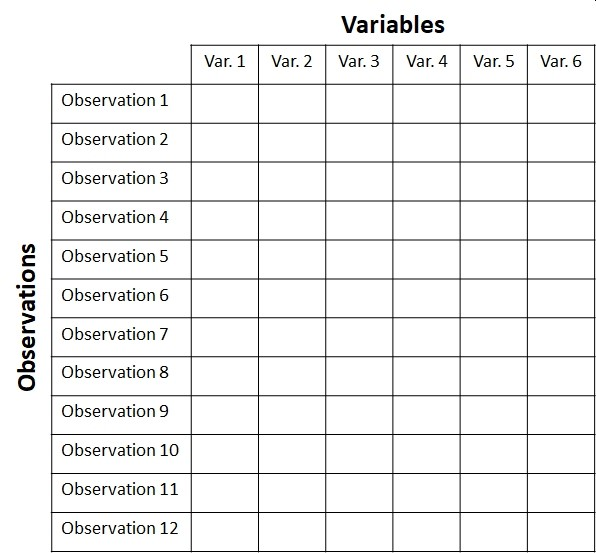
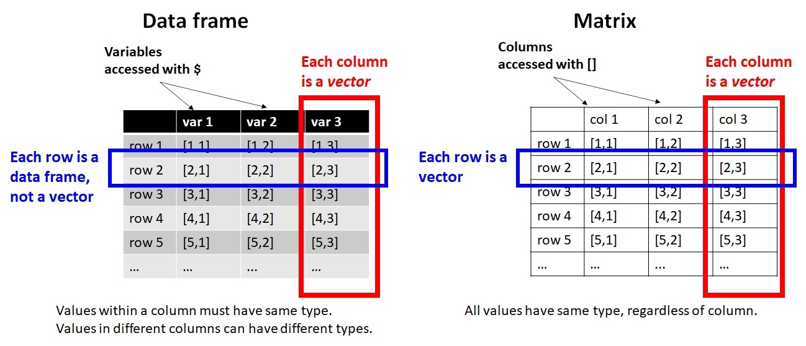
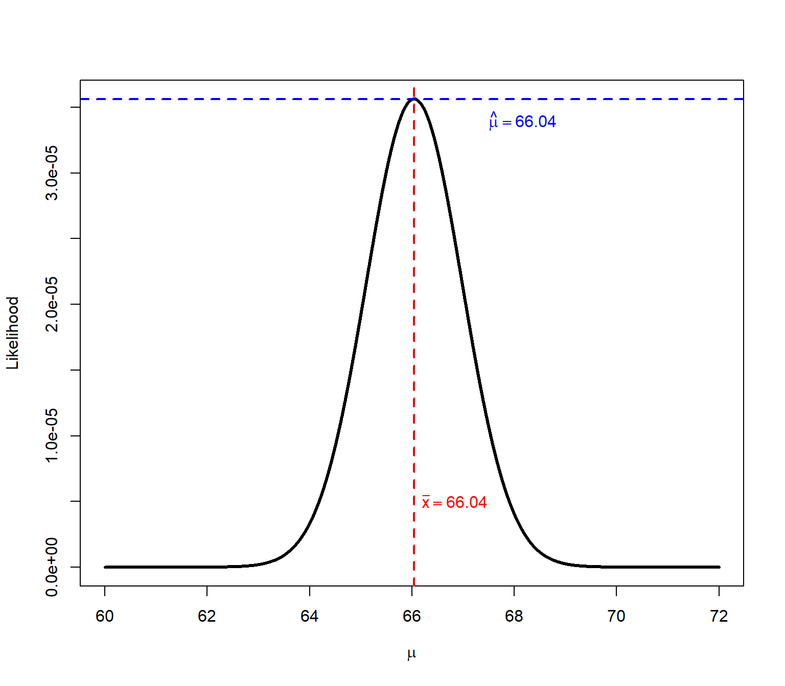
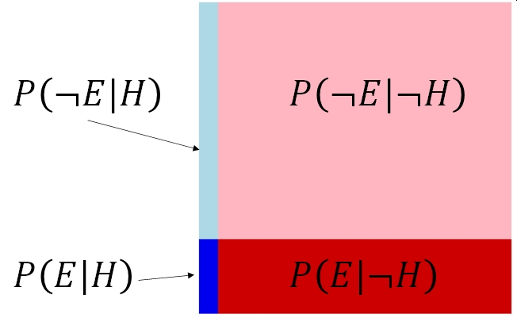
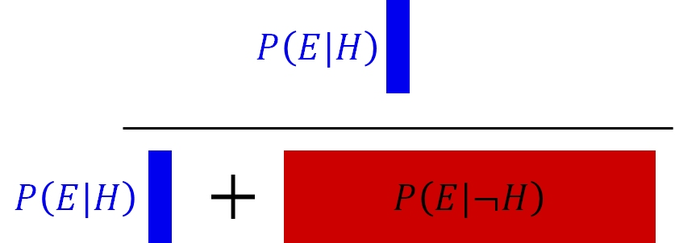
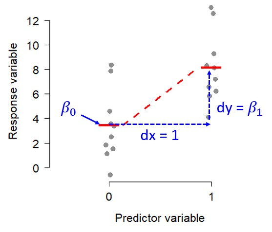
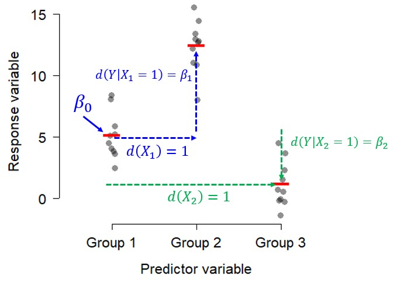
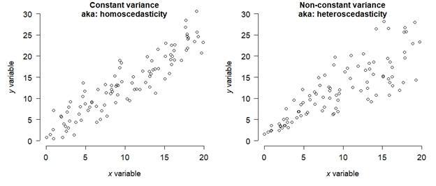
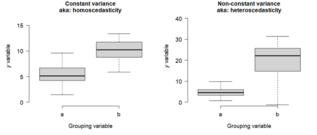

a <- c(63.6, 66.5, 64.2, 67.6, 68.3)
mean(a)[1] 66.04In this module, we will review some basic statistical methods that are usually covered introductory statistics or biostatistics course. These tests are classics for a reason: they are powerful and collectively can be applied to many situations. However, as we shall see, these tests have a lot of assumptions and conditions that must be met in order to use them…and those conditions are not always easy to meet.
First, we’ll review the basics of how biological data are stored, then what a frequentist statistical test really is–including what P-values are and what they represent. Then we’ll review the classic frequentist tests in 4 categories:
Most biological problems fall into one of those four categories. Most introductory statistical courses cover the first 3 categories pretty well. Classification can be more complicated. When your problem does not, you’ll need to move on to one of the more advanced analyses we’ll cover later this semester.
When biologists collect data in an experiment, they create a dataset. This often takes the form of a table. Different software packages may refer to this as a spreadsheet, data frame, or matrix. Whatever you call them, a typical biological dataset usually looks like this:

{fig-alt: “Structure of a typical biological dataset. Observations are stored on rows, and variables that describe those observations are stored in columns. All information about an observation is contained in 1 row. All observations of one variable are contained in 1 column.”}In R, datasets are almost always stored as objects called data frames. Data frames have rows and columns, and function a bit like a spreadsheet. Unlike a matrix, rows and columns are not interchangeable: a row of a data frame is a data frame with 1 row, while a column is really a vector (i.e., not a data frame).

{fig-alt: ““}Variables in a dataset come in three varieties. Understanding these is crucial to being able to think about the structure of your dataset and what kind of statistical test you need.
In this course, every analysis will have have at least 1 response variable and at least 1 predictor variable. Understanding the nature of your response variable and predictor variable(s) is key to choosing an appropriate analysis.
Variables can be either categorical or numeric:
When categorical variables are used as explanatory variables, they are called factors. Each unique value of a factor is called a level. For example, the factor “treatment” might have two levels, “control” and “exposed”. Or, the factor “diet” might have 3 levels: “herbivore”, “omnivore”, and “carnivore”.
Numeric variables can be continuous or discrete:
Some kinds of numeric variables need to be treated with care, because they have a particular domain and set of possible values. Most of these should probably not be modeled (i.e., treated as the response variable) using the basic statistical methods in this module. We’ll explore models in Module 18 for these variables.
| Type of data | Domain | How to model |
|---|---|---|
| Counts | Non-negative integers | GLM or GLMM |
| Proportions | The closed interval \([0,1]\), or possibly the open interval \((0,1)\) depending on the context | GLM or GLMM; possibly a \(\chi^2\) test or other test for independence |
| Measurements (mass, length, volume, etc.) | Positive real numbers for dimensions; real values for temperature (except Kelvin) | Linear model; transformation or an appropriate GLM/GLMM if needed |
| Censored or truncated data | Usually real numbers with a well-defined upper or lower limit, often related to limits of detection or measurement | Special methods such as Tobit models (beyond the scope of this course…for now) |
| Categorical outcomes | One of a set of possible categories. Categories may be binary, ordered, or unordered. Although often coded as numbers, they should not generally be treated as numerical measurements | Logistic, ordinal, or multinomial regression; GLMMs for non-independent observations; classification trees (CART) |
Classical statistics, such as those taught in introductory statistics or biostatistics courses, are also frequentist statistics. This means that these methods rely on probability distributions (also called frequency distributions) of derived values called test statistics, and make assumptions about the applicability of those test statistics. These assumptions can be quite strong, and possibly restrictive, so you need to be careful when using frequentist tests.
If your data do not meet the assumptions of a test, the test might be invalid.
The basic procedure of any frequentist test is as follows:
Frequentist tests vary widely in their assumptions, the nature of their test statistics, and so on, but the procedure above describes most of them.
Another way to think of frequentist statistics is the problem of distinguishing signal from noise. The biological patterns we want to discover are the signal. Everything else that we measure that is influenced by random variation in the subject or the environment or the measurement process is the noise. Humans are very good at detecting patterns in noise, even if there isn’t one.
A real biological pattern should be reliably produce a signal that we can detect. Noise, on the other hand, can produced apparent signals but not reliably or repeatedly. Frequentist statistics is a formalized way of asking the question “How likely is it that this pattern is due to noise?”. If the answer is a sufficiently low probability, then the inference is that the pattern is a signal.
When scientists design experiments, they are testing one or more hypotheses: proposed explanations for a phenomenon. Contrary to popular belief, the statistical analysis of experimental results usually does not test a researcher’s hypotheses directly. Instead, statistical analysis of experimental results focuses on comparing experimental results to the results that might have occurred if there was no effect of the factor under investigation. This paradigm is called null hypothesis significance testing (NHST) and, for better or worse, is the bedrock of modern scientific inference.
In other words, traditional statistics sets up the following:
Null hypothesis (\(H_0\)): default assumption that some effect (or quantity, or relationship, etc.) is zero and does not affect the experimental results
Alternative hypothesis (\(H_a\) or \(H_1\)): assumption that the null hypothesis is false. Usually this is the researcher’s scientific hypothesis, or proposed explanation for a phenomenon.
In (slightly) more concrete terms, if researchers want to test the hypothesis that some factor X has an effect on measurement Y, then they would run an experiment comparing observations of Y across different values of X. They would then have the following set up:
Null hypothesis: Factor X does not affect Y.
Alternative hypothesis: Factor X affects Y.
Notice that alternative hypothesis is the logical negation of the null hypothesis, not a statement about another variable (e.g., “Factor Z affects Y”). This is an easy mistake to make and one of the weaknesses of NHST: the word “hypothesis” in the phrase “null hypothesis” is not being used in the sense that scientists usually use it. This unfortunate choice of vocabulary is responsible for generations of confusion among researchers and statistics learners.
In order to test an “alternative hypothesis”, what researchers usually do is estimate how likely the data would be if the null hypothesis were true. If a pattern seen in the data is highly unlikely, this is taken as evidence that the null hypothesis should be rejected in favor of the alternative hypothesis. This is not the same as “accepting” or “proving” the alternative hypothesis. Instead, we “reject” the null hypothesis. In the other case, we do not “accept” the null hypothesis, we “fail to reject” it.
The null hypothesis is usually translated to a prediction like one of the following:
The mean of Y is the same for all levels of X.
The mean of Y does not differ between observations exposed to X and observations not exposed to X.
Outcome Y is equally likely to occur when X occurs as it is when X does not occur.
Rank order of Y values does not differ between levels of X.
All of these predictions have something in common: Y is independent of X. That’s what the null hypothesis means. To test the predictions of the null hypothesis, we need a way to calculate what the data might have looked like if the null hypothesis was correct. Once we calculate that, we can compare the data to those calculations to see how “unlikely” the actual data were. Data that are sufficiently unlikely under the assumption that the null hypothesis is correct—a “significant difference”—are a kind of evidence that the null hypothesis is false.
Most classical statistical tests calculate a summary statistic called a p-value to estimate how likely some observed pattern in the data would be if the null hypothesis was true. This is the value that researchers often use to make inferences about their data. The p-value depends on many factors, as we’ll see, but the most important are:
When I teach statistics to biology majors, I try to avoid the terms “null hypothesis” and “alternative hypothesis” at first, because most of my students find them confusing. Instead, I instruct students to ask two questions about a hypothesis:
What should we observe if the hypothesis is not true?
What should we observe if the hypothesis is true?
In order to be scientific hypothesis, both of those questions have to be answerable. Otherwise, we have no way of distinguishing between a situation where a hypothesis is supported, or a situation where it is not, because experimental results could always be due to random chance (even if the probability of that is very small). All we can really do is estimate how likely it is that random chance drove the outcome.
When interpreting p-values, there are 3 extremely important things to remember:
When \(p<0.05\), the hypothesis is “supported”. When \(p\ge0.05\), the hypothesis is “not supported”. Notice that the terms are “supported” or “not supported”. Words like “proven” or “disproven” are not appropriate when discussing p-values.
The p-value is not the probability that your hypothesis is false, or the probability that a hypothesis is true. It is a heuristic for assessing how well data support or do not support a hypothesis.
p-values depend on many factors, including sample size, effect size, variation in the data, and how well the data fit the assumptions of the statistical test used to calculate the p-value. This means that p-values should not be taken at face value and never used as the sole criterion by which a hypothesis is accepted or rejected.
When a statistical test returns a p-value less than 0.05, we say that the results are “statistically significant” and we “reject the null hypothesis”. For example, a “statistically significant difference” in means between two groups, or a “statistically significant correlation” between two numeric variables.
When a statistical test returns a p-value of 0.05 or greater, we say that the test (or difference, or whatever) is “not statistically significant” and we “fail to reject the null hypothesis”. Notice that we do not “accept the null hypothesis”–that would require a different kind of analysis.
One of the main alternatives to NHST is information-theoretic (IT) modeling. IT methods borrow insights from information theory to draw conclusions about the extent to which statistical models describe data (Burnham and Anderson 2002). Rather than evaluating individual hypotheses primarily using p-values, IT methods can be used to compare different models in terms of how much information is expected to be lost by using each model to represent the underlying process (Hobbs and Hilborn 2006). In other words, whereas NHST often asks whether particular effects are supported by the data, IT methods emphasize comparing the relative support for entire models.
There are several information criteria in use, but many balance two components: one representing how well the model fits the observed data, based on its likelihood, and another that penalizes the model for complexity (i.e., number of parameters). These information criteria are used to compare models to each other, not to determine whether any particular model is “significant” or whether any of its terms are significant. The complexity penalty is important because adding parameters will generally improve, or at least not worsen, the fit of a model to the observed data, even when those additional parameters have little value for describing the underlying process. Without such a penalty, model selection would therefore tend to favor overly complex models…a phenomenon called overfitting.
The most common information criterion is Akaike’s Information Criterion (\(AIC\)) (Burnham and Anderson 2002):
\[AIC=-2\log{\left(\hat{L}\right)+2K}\]
where \(\hat{L}\) is the maximum value of the likelihood function and \(K\) is the number of estimated parameters in the model (e.g., slopes and intercepts). Lower values of AIC indicate a better balance between model fit and model complexity. The multiplier of 2 on the \(K\) term is the penalty for complexity (i.e., adding additional parameters). This makes adding another parameter supported only if it improves the likelihood enough to overcome the penalty.
Other information criteria exist, such as the \(AIC\) corrected for small sample sizes, \(AIC_C\):
\[{AIC}_C=AIC+\frac{2K\left(K+1\right)}{n-K-1}\]
Where \(n\) is the number of observations used to fit the model. The correction becomes smaller as smaple size increases relative to the number of parameters, so \(AIC_C\) converges toward \(AIC\) as sample size increases. Exactly what constitutes a “small” sample size is subjective, but Burnham and Anderson (2002) suggest that \(AIC_C\) should be used when \(n/K<40\).
Many other information criteria exist, such as \(QAIC\) and \(QAIC_C\) for use when overdispersion in suspected (Lebreton et al. 1992), Bayesian information criterion (BIC) which has a stronger complexity penalty; and deviance information criterion (DIC) which is often used in Bayesian inference.
Before we jump into an example IT data analysis, we also need to understand the concept of the likelihood function. A likelihood function describes how well different possible parameter values are supported by the observed data under a particular statistical model. A statistical model specifies the mathematical relationships among variables and the probability distribution of the observations; examples include a linear regression model or a Poisson GLM.
In symbols, we can write the likelihood function as:
\[\mathcal{L}\left(\theta|x\right)\]
where \(x\) represents the observed data and \(\theta\) represents one or more unobserved parameters. For the data we actually observed, the likelihood function asks: which possible values of \(\theta\) would make these data more or less plausible?
Importantly, likelihood is not the probability that a particular parameter value or model is correct. Although \(\mathcal{L}\left(\theta|x\right)\) is written with the parameters to the left of the vertical bar, it is based on the probability of the data given the parameters, \(p\left(x|\theta\right)\), not the probability of the parameters given the data, \(p\left(\theta|x\right)\). The latter is a Bayesian posterior probability (see Section 14.3.2).
The takeaway is that probability askes about data when the model is known, while likelihood asks about parameter values after the data have been observed.
Likelihoods are most famously used in modern data analysis as maximum likelihood explanation (MLE). This procedure attempts to estimate the parameters of a model most likely to produce the observed data.
Here’s a quick example: imagine you have measured 5 squirrel femurs and found lengths of 63.6, 66.5, 64.2, 67.6, and 68.3 mm, yielding an observed sample mean and SD of \(66.0\pm2.1\) mm. What estimate of the population mean \(\mu\) that makes this set of measurements most plausible?
a <- c(63.6, 66.5, 64.2, 67.6, 68.3)
mean(a)[1] 66.04sd(a)[1] 2.067124Consider 3 candidates for \(\mu\): 64, 66, and 68. For any proposed value of \(\mu\), dnorm() tells us the probability density of observing each femur length under a normal distribution with that mean:
samp.sd <- 2.1
dnorm(a, mean=64, sd=samp.sd)[1] 0.18655737 0.09352817 0.18911291 0.04370627 0.02334791dnorm(a, mean=66, sd=samp.sd)[1] 0.09887122 0.18466340 0.13156914 0.14211406 0.10428277dnorm(a, mean=68, sd=samp.sd)[1] 0.02115483 0.14719781 0.03695464 0.18655737 0.18804388Because we observed more than 1 measurement, and assume that they are independent, the joint likelihood is the product of their densities:
prod(dnorm(a, mean=64, sd=samp.sd))[1] 3.367191e-06prod(dnorm(a, mean=66, sd=samp.sd))[1] 3.560036e-05prod(dnorm(a, mean=68, sd=samp.sd))[1] 4.036932e-06It looks like 66 has the greatest joint likelihood across all observed data. But we can get a fuller picture if we test more values:
# series of possible mu to test
test.mu <- seq(60, 72, by=0.01)
# number of possible mu
n <- length(test.mu)
# set up vector to hold likelihood
# function of each candidate mu
lik <- numeric(n)
# calculate likelihoods of mu's in a loop
for(i in 1:n){lik[i] <- prod(dnorm(a, test.mu[i], sd=samp.sd))}#i
# now plot the likelihood function vs. mu
plot(test.mu, lik, type="l", lwd=3,
xlab=expression(mu),
ylab="Likelihood")
abline(v=mean(a), lwd=2, lty=2, col="red")
text(66.2, 0.5e-5, expression(bar(x)==66.04), adj=0, col="red")
abline(h=lik[which.max(lik)], lty=2, lwd=2, col="blue")
text(67.5, 3.4e-5, expression(hat(mu)==66.04), adj=0, col="blue")
In this case, the sample mean \(\bar{x}=66.04\) (mean(a)) is the same as the \(\mu\) value that maximized the joint likelihood of the 5 observed values, \(\hat{\mu}=66.04\) (test.mu[which.max(lik)]). But, the code above only worked because we held the SD to be known and the same as the sample SD. If we didn’t, we would have to search over a range of possible SD values, and find the combination of \(\hat{\mu}\) and \(\hat{\sigma}\) that maximized the likelihood. In that case, the profile of likelihoods would have been a surface, not a line. The maximum likelihood estimates for something like a linear regression model, or a Poisson GLM, are found by similar procedure, only with multiple parameters making the profiling much more complicated.
Bayesian inference is a framework for evaluating evidence and updating beliefs based on evidence. When conducting Bayesian inference, researchers start with some initial idea about their model system: a prior. They then collect evidence (data), and update their idea based on the evidence. The updated idea is called the posterior.
Some researchers prefer to use naïve or uninformative priors, so that their conclusions are influenced mostly by the evidence. Bayesian statistical methods will return essentially the same parameter estimates (e.g., differences in means or slopes) as other methods when uninformative priors are used. This means that almost any traditional statistical analysis can be replaced with an equivalent Bayesian one. The statistical models that are fit, such as linear regression or ANOVA, are the same. All that really changes is how the researcher interprets the relationship between the model and the data.
In frequentist inference, researchers consider parameters like slopes, intercepts, effect sizes, etc., as fixed, unknown parameters and consider the data to occur stochastically following probability distributions. Bayesian inference flips that script, treating the data as fixed, and assuming that the model parameters are unknown quantities following probability distributions.
Bayesian inference depends on Bayes’ theorem:
\[p\left(H|E\right)=\frac{P\left(E|H\right)P\left(H\right)}{P\left(H\right)P\left(E|H\right)+P\left(\lnot H\right)P\left(E|\lnot H\right)}=\frac{P\left(E|H\right)P\left(H\right)}{P\left(E\right)}\]
where
Bayes’ theorem is powerful because it is very general. The precise nature of \(E\) and \(H\) do not matter. All that matters is that one could sensibly define an experiment or set of observations in which \(E\)* might depend on \(H\) and vice versa.
Bayesian inference is attractive to many biologists because it mimics the way that scientists actually think: starting with one idea (a prior), collecting evidence, then updating that idea (posterior). Part of the Bayesian calculation is \(p\left(H|E\right)\), or the probability of the hypothesis being true given the evidence that is observed. Contrast this with the frequentist p-value, which is \(p\left(E|\lnot H\right)\). Most people instinctively want the first, but have to settle with the almost backwards logic of the p-value.
Here is a quick example of Bayesian reasoning. Imagine you go to the doctor and get tested for a rare condition, Niemann-Pick disease. Your doctor tells you that this disease affects about 1 in 250000 people. Unfortunately, you test positive. But, the doctor tells you not to worry because the test is only 99% reliable. Why is the doctor so sanguine, and what is the probability that you have Niemann-Pick disease?
The probability of having this disease can be estimated using Bayes’ theorem. First, use what you know to assemble the terms:
The denominator includes two possibilities: either a positive test when someone has the disease, or a positive test when someone doesn’t have the disease. That is, the probability of a true positive or a false positive. This can be calculated as:
\[p\left(H\right)\left(E|H\right)+p\left(\lnot H\right)p\left(E|\lnot H\right)\].
The first term is the probability of a true positive (\(p\left(E|H\right)\)) scaled by the probability of having the disease (\(p\left(H\right)\)). The second is the probability of a false positive (\(p\left(E|\lnot H\right)\)) scaled by the probability of not having the disease (\(p\left(\lnot H\right)\)). We can simplify a bit by reasoning that \(p\left(\lnot H\right)\) is really \(1-p\left(H\right)\).
Plug every thing into Bayes’ rule:
\[p\left(H|E\right)=\frac{P\left(E|H\right)P\left(H\right)}{P\left(H\right)P\left(E|H\right)+\left(1-P\left(H\right)\right)P\left(E|\lnot H\right)}=p\left(H|E\right)=\frac{\left(0.99\right)\left(0.000004\right)}{\left(0.000004\right)\left(0.99\right)+\left(0.999996\right)\left(0.01\right)}\] and simplify:
\[p\left(H|E\right)=\frac{0.00000396}{0.01000392}=0.000396\]
That’s not very worrying! In this example, the test evidence can’t overcome the fact that the disease is so rare. In other words, even among people who get a positive test, it’s far more likely that you don’t have the disease but got a false positive than that you have the disease and got a true positive. This is an example of a very strong prior being more influential than the evidence.
There’s an issue with this calculation, though. The prior probability of 0.000004 was based on the assumption that the test was conducted on a random person from the population. Do physicians conduct tests for vanishingly rare diseases on random people? Of course not. Maybe this physician only orders this test if they think that there is a 10% chance that you really have the disease. This might be because, in their experience, 10% of people with your symptoms turn out to have the disease. In that case, the calculation becomes:
\[\left(H|E\right)=\frac{\left(0.99\right)\left(0.1\right)}{\left(0.1\right)\left(0.99\right)+\left(0.9\right)\left(0.01\right)}\]
which simplifies to:
\[p\left(H|E\right)=\frac{0.099}{0.108}=0.916\]
91.6% is a lot more worrying than 0.0004%. This example shows that the prior probability can have a huge effect on the posterior probability.
One way to visualize Bayes’ rule is to think of the entire probability space as occupying a square with area 1. The square has 4 sections:

Notice that the prior probability \(p\left(H\right)\) (the two left, blue sections) is much smaller than the probability of \(\lnot H\). Bayes’ rule restricts our focus to the cases where we observe the evidence–the bottom two sections. Given that the evidence was observed, the sections with \(\lnot E\) are irrelevant. The calculation then becomes:

Besides its epistemological neatness, another advantage of Bayesian inference in practice is that parameters in Bayesian models (e.g, slopes, intercepts, etc.) are estimated with credible intervals (CRI), not confidence intervals (CI).I’m a big fan of Bayesian inference. But, I’ll admit that there is a downside: Bayesian model-fitting is not available in base R, and requires specialized packages and sometimes external software. Should you go through all of this Bayesian trouble? There are a few reasons where Bayesian inference might be preferable to traditional frequentist statistics.
Bayesian inference is beyond the scope of this course, but if you’re interested head on over to my course notes for BIOL 7950: Bayesian Inference for Biologists.
Linear models are called linear models because they can be expressed as linear combinations of a set of estimated parameters. A linear combination is an expression formed by multiplying each term by a constant, and adding the products together. For example,
\[ax+by\]
is a linear combination of \(x\) and \(y\), where \(a\) and \(b\) are constants. The \(x\) and the \(y\) could be single values, or, as commonly used in statistics, vectors of values. A vector in this sense is an ordered set of values. One example of a linear combination that you’re already familiar with is a weighted mean. The weighted mean of a set of numbers \(\left[x_1,x_2,\ldots,x_n\right]\) is given by the sum
\[\bar{x}_w=\sum_i^n\left(\frac{w_i}{\sum_i^nw_i}\right)x_i\]
Because the sum of all weights must be 1, this simplifies to:
\[\bar{x}_w=\sum_i^n\left(w_i\right)x_i\]
meaning that the weights are the coefficients, and the values of \(x\) are the terms. Actually, the mean itself is a linear combination, where all weights are equal to \(1/n\).
To generalize, a linear model consists of the sum of the products of an input vector and a series of coefficients of the same length. In a simple linear regression, the coefficient is the slope: the expected change in \(Y\) associated with a unit increase in \(X\).
Importantly, a linear model must be linear in its parameters, not necessarily in the predictor variables themselves. For example, the model \(y=\beta_0+\beta_1x+\beta_2x^2\) is nonlinear in \(x\) because the \(x^2\) forces a curved graph. But, if \(x^2\) increases by 1, then \(y\) will increase by \(\beta_2\). This is what it means to be “linear in its parameters”.
All linear models can be written very compactly in matrix notation:
\[ \mathbf{Y}=\mathbf{X}\boldsymbol{\beta}+\boldsymbol{\varepsilon} \]
The boldface variables indicate that each term is a matrix or a vector, not a variable in the usual sense. In most biological analyses, \(\mathbf{Y}\), \(\mathbf{\beta}\), and \(\mathbf{\varepsilon}\) are column vectors, which are like matrices with 1 column. The matrix \(\mathbf{X}\) is the design matrix, which contains the values of the explanatory variables used to fit the model.
The notation above may be compact, but expanding everything out makes it clearer what is going on:
\[ \left[ \begin{matrix} y_1 \\ y_2 \\ \vdots \\ y_n \end{matrix} \right] = \left[ \begin{matrix} 1 & x_{11} & \cdots & x_{1p} \\ 1 & x_{21} & \cdots & x_{2p} \\ \vdots & \vdots & \ddots & \vdots \\ 1 & x_{n1} & \cdots & x_{np} \end{matrix} \right] \left[ \begin{matrix} \beta_0 \\ \beta_1 \\ \vdots \\ \beta_p \end{matrix} \right] + \left[ \begin{matrix} \varepsilon_1 \\ \varepsilon_2 \\ \vdots \\ \varepsilon_n \end{matrix} \right] \]
where \(n\) is the number of observations, and \(p\) is the number of predictors. The leftmost column in \(\mathbf{X}\), consisting of all 1s, are what gets multiplied by \(\beta_0\) to produce the intercept. For example, the expected value for the first value of the response \(y_1\) is equal to:
\[E\left(y_1\right)=\beta_0\left(1\right)+\beta_1\left(x_{11}\right)+\beta_2\left(x_{12}\right)+\ldots+\beta_p\left(x_{1p}\right)\]
where \(x_{ij}\) is the \(x\) value for observation \(i\), predictor variable \(j\). The observed value of \(y_i\) the expected value plus some random deviation \(\varepsilon_i\), which comes from a normal distribution with mean 0 and SD \(\sigma_{res}\) (“res” is for “residual”).
This notion of linearity is what makes many analyses with factors (categories or grouping variables) as predictors “linear”. For example, the t-test is a linear model, but it doesn’t really describe a line on a plot of y vs. x the way that linear regression does. However, if you encode the factor (grouping variable) it should be clear what the difference in group means really means:
\[ E\left(y_i\right)=\left(1\times\beta_0\right)+\left(x_i\times\beta_1\right) \]
For group 1, \(x_1=0\), so the expected value is \(\beta_0\). For group 2, \(x_i=1\), so the \(\beta_1\) term comes into play as the difference in means between groups 1 and 2. This is what R, SAS, and other programs are doing internally when you analyze data with a factor variable. Here is what that looks like visually:

Similarly, a one-way ANOVA with 3 levels can be thought of this way:\[ E\left(y_i\right)=\left(1\times\beta_0\right)+\left(x_{1,i}\times\beta_1\right)+\left(x_{2,i}\times\beta_2\right) \]
And visualized this way:

There are tangible and intangible benefits to using linear models. First, as shown above, linear models can be written very compactly in the language of linear algebra (i.e., the branch of mathematics that deals with certain types of operations on matrices and vectors). From a practical standpoint, this forces us to organize our datasets sensibly, into matrices with rows that describe observations and columns that describe variables. From a computational standpoint, this makes the computer’s job much more efficient because of the architecture of modern computers.
Second, and less obvious, is that the model coefficients of a linear model can be solved for, rather than approximated. When we fit a linear model to data, we are really after the values in the coefficients matrix. A modern statistical program can solve for these values rather than having to estimate them. For example, a simple linear regression with 1 predictor variable \(X\) can be solved by finding the intercept \(\beta_0\) and \(\beta_1\) that together minimize the sum of squared residuals \(SS_{res}\). These coefficients are:
\[ {\hat{\beta}}_1=\frac{\sum_{i=1}^{n}\left(x_i-\bar{x}\right)\left(y_i-\bar{y}\right)}{\sum_{i=1}^{n}\left(x_i-\bar{x}\right)^2} \]
to yield the effect of \(x_1\), \(\beta_1\). The intercept is then:
\[ {\hat{\beta}}_0=\bar{y}-{\hat{\beta}}_1\bar{x} \]
The caret symbol \(\hat{}\) indicates that a value is an “estimate”, even when it is solved for from data (e.g., \(\hat{\beta_1}\) is pronounced “beta-one-hat” and is the estimated slope). Similarly, the bar above a letter indicates the sample mean (e.g., \(\bar{x}\)” is pronounced “x bar” and is the mean of all observed x).
Linear models have some other features and assumptions that you need to be aware of. If your data or variables violate the assumptions below, you may need to use something other than linear models to analyze your data.
The linear model assumes that model residuals, the random errors representing the differences between observed and predicted values, follow a normal distribution. Models for data that do not have normal residuals exist, but they are not linear models. We’ll explore those in Chapter 18.
The assumption of normal residuals explains the last term in the linear model equation, \(\varepsilon_i\):
\[ y_i=\beta_0+\beta_1x_i+\varepsilon_i \]
In this equation, \(y_i\) is observation i of the response variable y; \(\beta_0\) is the intercept; \(\beta_1\) is the slope; \(x_i\) is the predictor variable x for observation i, and \(\varepsilon_i\) is the residual for observation i (\(\varepsilon\) is the Greek letter “epsilon” and usually stands for error or residual terms). The residual term can be expanded like this:
\[y_i=\beta_0+\beta_1x_i+Normal\left(0,\sigma_{res}\right)\]
This expansion makes it clear that each residual \(\varepsilon_i\) comes independently from a normal distribution with mean 0 and standard deviation (SD) \(\sigma_{res}\). For convenience, we sometimes separate the deterministic part and the stochastic part of the model and write the state space form of the linear regression model:
\[ y_i\sim Normal\left(\eta_i,\ \sigma_{res}\right) \]
\[ \eta_i=\beta_0+\beta_1x_i \]
In this version, the symbol \(\sim\) means “distributed as” and denotes a stochastic relationship—a relationship that contains some element of randomness. This is in contrast to a deterministic relationship, which does not (equality, aka: identity, = is the most famous kind of deterministic relationship).
Linear models assume homoscedasticity, or constant variance. This means that the residual variance does not depend on either x or y.If the variance in the response variable depends on some predictor variable, then this should be incorporated into the model (resulting in something other thana linear model). If the variance appears to depend on the response variable, then there is probably an issue with the assumed response distribution.
The figure below shows two datasets with a linear relationship between x and y. In the left panel, the variance is the same everywhere (homoscedastic). The right panel shows a heteroscedastic relationship where the variance increases at larger x.

The figure below shows two datasets with a categorical predictor, suitable for a t-test. The left panel shows a relationship with equal variances in each group, while the right panel shows a situation with unequal variances.

Heteroscedasticity is a serious problem for linear models because it leads to biased parameter estimates and standard errors (SE) of those estimates. The latter issue means that significance tests on parameters will be incorrect. Bayesian statistics does not involve significance tests, but heteroscedasticity that is unaccounted for will still lead to biased estimates. The usual solution is to either apply a variance-stabilizing transformation (like the log-transform), incorporate variance parameters that can be estimated, or be clever about choosing a response distribution.
Linear models assume that predictor values are precisely known (“fixed”) and independent of each other. If there is uncertainty in the predictor variables, this adds uncertainty to the response values that linear models cannot account for. Simply put, linear models have a term for uncertainty in y, \(\sigma_{res}\), but no term for uncertainty in x.
(i.i.d.)
The assumption of independently and identically distributed (i.i.d.) errors is very important. It means that the residual for each observation depends only on the parameters of the residual distribution and not on predictor variables or other observations. When the assumption of independence is violated, the degrees of freedom in the analysis is artificially inflated because the number of unique pieces of information is smaller than the number used in the analysis. In frequentist analyses, this deflates the p-value and increases the chance of a type I error (false positive).
Real data almost always violate the linear model assumptions to some degree, so the answer to “do my data meet the assumptions of linear models?” is “No.”. The more useful question is, “do my data violate the assumptions of linear models enough to be a problem?”. Linear models can be robust to mild violations of these assumptions, but you need to be careful. Many of these assumptions can be tested directly—for example, testing residuals for normality or homoscedasticity—and if there is any doubt about whether your data meet the assumptions, you should perform those tests. Actually, you should perform the tests anyway just to be safe.
The term analysis of variance (ANOVA) is used in two related ways, and we need to clear them up before the next module. In introductory statistics, ANOVA usually refers to a linear model used to compare means among groups, such as comparing mean body mass among three species of frog. If someone says something like, “we compared the treatments using ANOVA”, this is the sense they mean. We will explore this sense of ANOVA in Section 15.5.1.
More generally, ANOVA refers to a framework for evaluating how variation is attributed to different components of a statistical model. This is called “partitioning the variance” or “partitioning sums of squares”. For example, an ANOVA table can be used to test a linear regression even when the predictor is continuous and there are no groups to compare. The function of ANOVA in that case is to determine how much variation is explained by the different predictors–be they continuous or factors–in the model and how much variation is left over (residual). We will explore this sense of ANOVA in ?sec-groups-more-anova-table.
This broader usage is reflected in R’s anova() function, which can be applied to many kinds of models. For ordinary linear models, ANOVA tests are based on partitioning sums of squares. For generalized linear models, analogous tests are commonly based on changes in deviance rather than sums of squares. Deviance is a generalization of variance (which is calculated from sums of squares), so sums of squares are a special case of deviance (Section 18.4). This reflects the fact that linear models based on sums of squares are a special case of generalized linear models (Chapter 18).